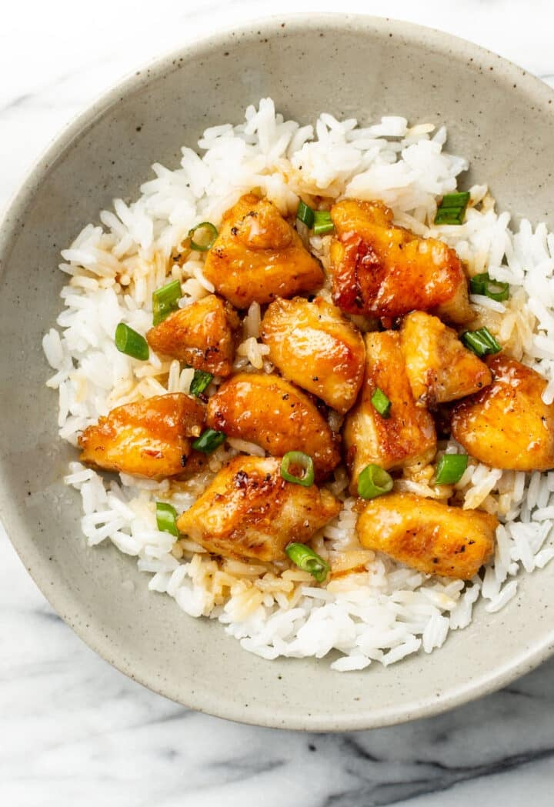

A sweet and salty fakeaway for all the family and saves a fortune on ordering it

Ingredients
130g Baby corn
5 Chicken breasts
350g Diced peppers
115g Frozen diced onions
2 Tsp Garlic puree
2Tsp Ginger puree
120ml Runny honey
180ml Soy sauce
1 Tbsp Cornflour
Steps
Cut the baby corn in half on the diagonal. Cut the chicken breasts into chunks. Add to a large mixing bowl with all the remaining ingredients. Mix well until coated.
Pour the contents of the bowl into a large saucepan. Place on a medium heat, bring to the boil, then reduce to a gentle simmer. Cook for 25-30 minutes, stirring regularly, until the chicken is cooked through